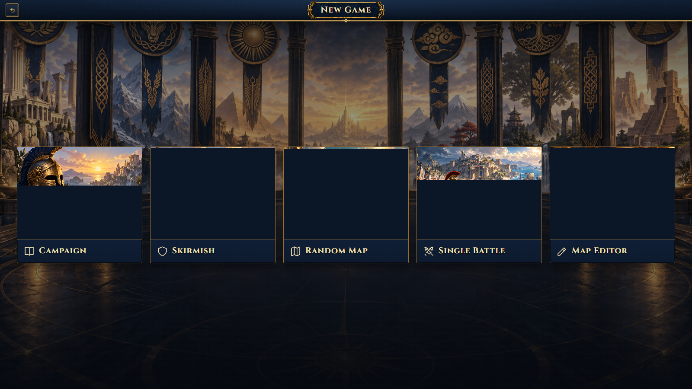
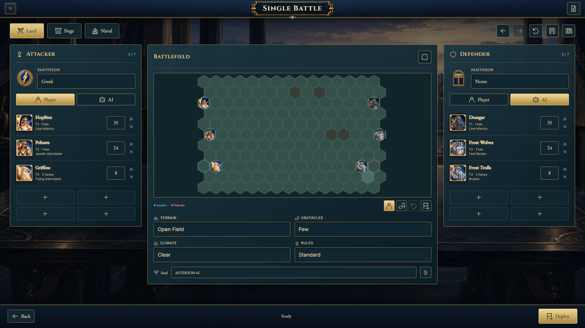
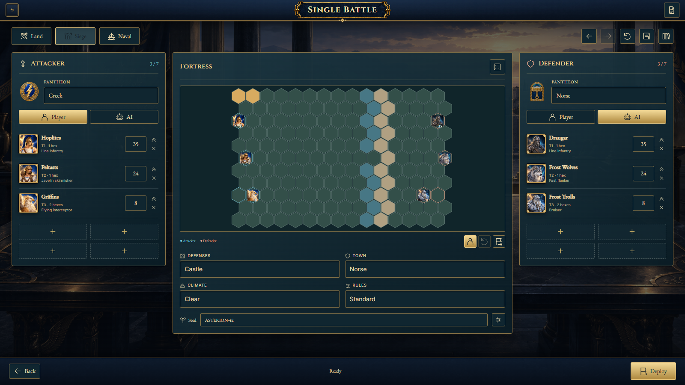
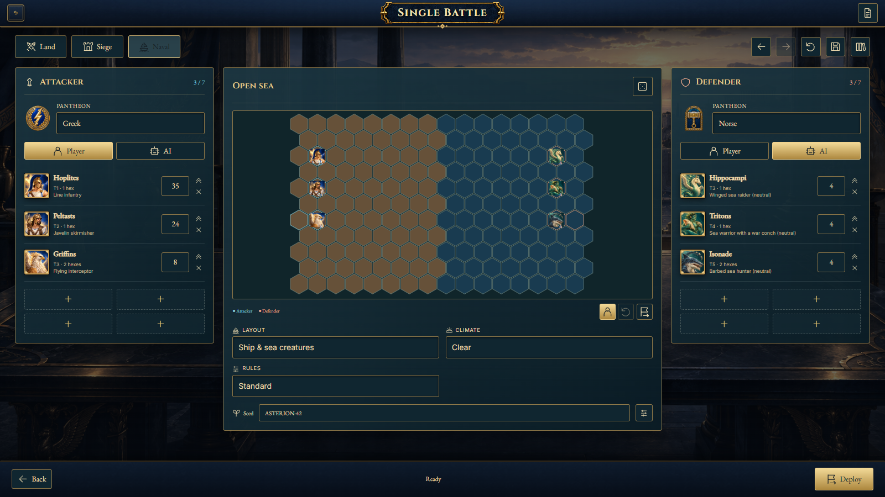

Install Pantheon Realms 1.8.0, then choose New Game → Single Battle. The tile opens setup immediately. Armies have no heroes, equipment, levels or commander spells.

Select a creature portrait or a stack on the preview, then click a legal starting hex. Dragging on the preview also moves stacks. Click a friendly stack to swap; use Rotate to reverse its footprint. The flag button restores automatic deployment. Undo and Redo cover setup edits. Deploy opens the existing battlefield for final placement and confirmation.



The disk icon saves a named preset in the local battle library; saving the same name updates it. The library keeps up to 100 presets and the last 30 results. Advanced settings provide the preset name and siege structure settings. Export/import uses .battle.json files. A preset records both original armies, positions, battlefield settings and seed.
For a fight in progress, use Pause → Save Game; Load Game restores its current state. These are ordinary game saves, separate from setup presets. Single Battle does not grant experience, resources, town ownership or campaign progress.
Results show survivors, casualties, rounds, seed and attack/turret damage. Rematch restores the original setup. Edit setup returns to the editor. Watch replay plays the recorded orders; Export replay produces a versioned .replay.json file that the library can import. Replay import checks every order through the rules and verifies the final state checksum. Replays require matching rules and content versions.
The approved Single Battle tile and the newly generated war-room background are bundled in single-battle-v1 (art notes and exact prompt). Creature portraits, faction emblems, battlefield paintings and combat animations use the existing final assets. New controls use SVG icons; the setup diagram reads the actual engine geometry.
Validation includes the full 165-file regression suite, all four encounter types through completion and deterministic replay, save compatibility, all six pantheons and fortification levels, seven base/upgraded stacks, invalid imports and placements, browser interaction tests, and the packaged desktop application.